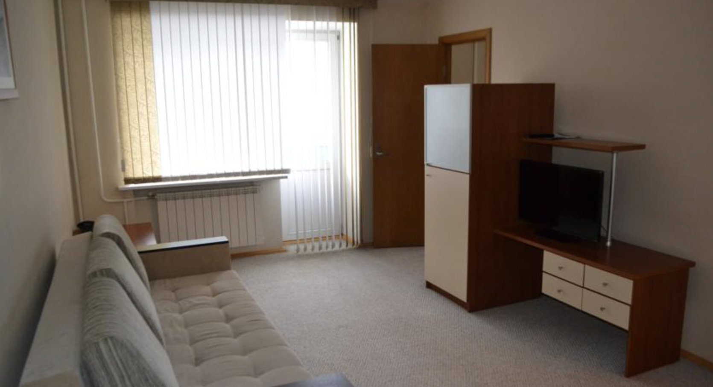
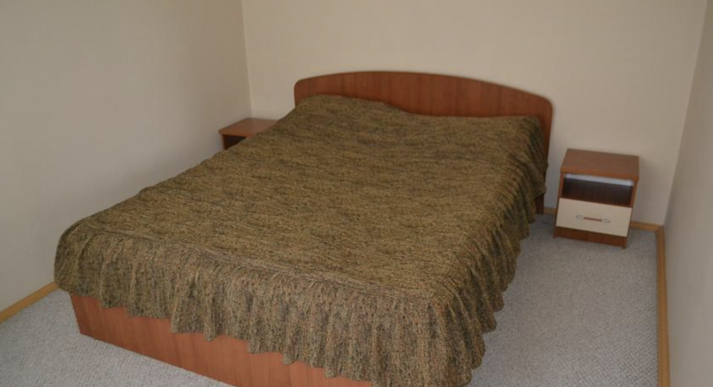

Добро пожаловать на сайт "Синегорье"!
⭐️⭐️


О нас
Гостиничный комплекс "Синегорье" - это уголок уюта и комфорта в сердце уральских гор. Неповторимая красота уральской природы, чистейший горный воздух, создают удивительную атмосферу отдыха. Удобное расположение комплекса вблизи реки Юрюзань, горы Завьялиха, многочисленных скал и пещер Усть-Катава, чистейших родников и минеральных источников, сделают досуг туристов и отдыхающих насыщенным и интересным.
Отель имеет удобное географическое расположение, в доступной близости располагаются такие города как Катав-Ивановск, Усть-Катав, Бакал, Трехгорный, Сатка. Равноудаленность и близость этих городов от Юрюзани позволит гостям, проживающим в нашем отеле, посетить эти города с рабочими визитами. Город Юрюзань расположен в непосредственной близости от федеральной трассы М5, что позволяет путешественникам, чей путь проходит через Уральский регион, найти приют и восстановить силы для дальнейшего путешествия в нашем комфортабельном отеле находящегося в центре города.
Трехэтажный отель, построен в современном стиле, имеет собственную котельную, которая обеспечивает комфортные условия проживания нашим гостям в самые сильные уральские морозы. Круглосуточная охрана, идеальная чистота и ухоженность внутренних помещений и прилегающей территории, бесплатная автопарковка для гостей.
Гостиничный комплекс "Синегорье" располагает целым набором дополнительных услуг как для отдыха, так и для бизнеса, который способен удовлетворить практически все потребности наших гостей: теннис, бильярд, сауна с бассейном, бар, кафе, конференц-услуги, обслуживание праздничных мероприятий, бесплатный беспроводной интернет, походы, экскурсии, рыбалка. В отеле 15 номера, в том числе 8 двухкомнатных номеров класса "люкс". В каждом номере есть телефон для внутренней связи (администратор, бар), телевизор, холодильник, WiFi. В санузле: душевая кабина, набор для душа, полотенца.
Новости
Новостей пока нет.
Возможно размещение рекламы.
Галерея

